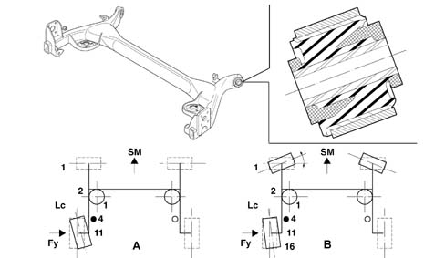
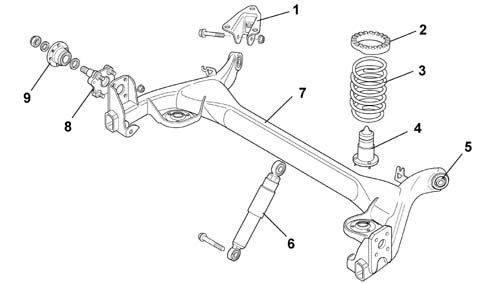

Introduction - REAR SUSPENSION
- Path
- Descriptions > 44 SUSPENSION AND WHEELS > 4420 REAR SUSPENSION > Introduction - REAR SUSPENSION
- Kind
- system description
- Applies to
- all engines; all production periods
- Interactive page
- https://sloeber94.github.io/elrnDB-lYpsln/en/#/2429853
Applies to: all engines; all production periods
The rear suspension has a 'torsion axle' (semi-independent wheels).
The advantages of this solution are:
similar kinematic behaviour to independent wheels with the relevant functional advantages
stabilizer function of the crossmember
lighter
pre-ftting of the suspension before installing it on the vehicle.
The 'torsion axle' suspension is fixed to the bodyshell by two brackets and the shock absorbers.
There are two flexible bushes housed in the ends of the arms known as 'smart' bushes, strengthened with transversely fitted plastic rods.
The bushes are ideal for filtering noise and improving stability round bends (auto-steering). The bushes are fitted at 600 kg on the arms and arranged at an angle of 25°.
Applies to: all engines; all production periods
SMART BUSHES
The torision axle has a 2.8 mm beam. with a kinematic torsion resistance of 28 kgm

A - Conventional torsion beam: round bends the wheel steers through the effect of lateral force Fy giving an accentuated oversteer effect. B -Torsion axle: under lateral load Fy the wheel steers very little and in a way 'modulated' by the rigidity of the bushes, improves the handling of the vehicle round bends.
Applies to: all engines; all production periods
SMART BUSHES
The structural shape and the high resistance properties of the material (FE220BH) has made it possible to dispense with the anti-roll bar.
The rear shock absorbers are hydraulic, double acting with the mounting under the floor so as not to reduce the width of the load carrying compartment and they are equiped with upper bushes with reduced dynamic rigidity (quality of the rubber and fastening slots) to absorb vertical forces and reduce noise.
Helical springs with end of travel buffers.

1 - Bracket fixing torsion axle to the bodyshell 2 - Rubber spring upper support seal 3 - Coil spring 4 - Impact buffer 5 - 'Smart' bush 6 - Shock absorber 7 - Rear torsion axle 8 - Stub axle 9 - Wheel hub